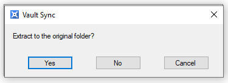
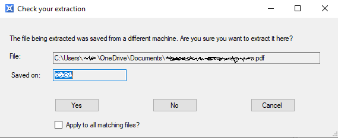
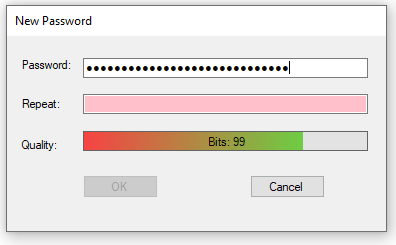

The tool bar buttons are enabled and disabled depending on the selected tab and the items in the lists.
This list contains all the files that have been stored in the vault. Whenever the file list is empty, the tab is switched to the synchronisation tab. Files are displayed with their full path, the last update date/time, the file size and the computer name of the computer on which the file originated. The list headings sort by clicking on the column heading.
The file lists start at the root folders of the drives, C:, D:, etc. Double click on the folders to go down a level to reveal the files within the folder. Double click on a file extracts the file to a temporary location and opens the file for viewing using the default viewer for the file type.
The synchronisation list contains folders or files that are to be synchronised into the vault if they change.
When the program starts it looks for a vault in the current directory. If it doesn't exist then you are asked if one should be created. Answering 'Yes' will open the new password dialog to obtain a password for the new vault. Answering 'No' will terminate the program.
The process of creating a new password is the same as the Change the Password process.
VaultSync works by keeping a set of folders and files on a computer synchronised with the vault. It is necessary to have at least one item in the synchronisation list for the vault to contain anything. Either folders or files can be included in the synchronisation list, with folders, e.g. Documents and Pictures, being the most useful.
Use the tool bar buttons to add items.You can also paste files from Windows Explorer using Control-V, or use drag and drop.
Once there are some files to synchronise, the synchronisation tool bar button is enabled.
A button press brings up the ignore pattern input dialog. Type in an ignore pattern and press 'OK'.
Note that the pattern *.* matches any file that has an extension and is not equivalent to 'all files'.
The extract tool bar button is enabled when a selection is made in the file list. The files list is multi-select so it is possible to select more than one item to extract. Files can also be extracted using the right click menu in the Files list.
Files can be extracted to their original location or another location. If the files were not originally stored on the same computer that they are being extracted onto then it may not be
possible to resore them to the same location.

If you answer 'Yes' then the files extract to the original location. If you answer 'No' then the folder selector dialog is shown for you to select the folder. If you cancel then
the extraction is cancelled.
Files may be being extracted on a different computer to the one they were stored from. VaultSync detect this and asks what to do.

If you answer 'Yes' then the file is extracted. If you answer 'No' then the file is not extracted. If you cancel then the extraction is cancelled. The check box allows the answer to be
applied to all future decisions so the dialog is not shown from then on.
The password dialog requests a password and a repeat of it. The repeat must match the first password to enable to 'OK' button and remove the colored highlight in the repeat background. This is a simple way to help the password to be remembered. It is vitally important the password isn't forgotten because there is no way to recover it and unlock the data.

Password quality is estimated by looking at the number of different character types and the length of the password. It isn't necessary to use a lot of different character types, e.g. lower case, digits, etc, but then the passwords have to be longer to be secure. The quality measure is in bits, which is the minimum number of bits required to store the password. A password of more than 90 bits is strong. The coloured bar uses 128 bits as its reference, so the bar is full and green when 128 bits is reached. Using keyboard sequences, e.g. qwerty, reduces the number of bits. A passphrase is more secure and easier to remember than a password.
VaultSync keeps synchronised data backups from one or more computers in an encrypted vault that is locked with a password. It is optimised to operate on a flash or external drive with minimal installation but it can also work on a hosted storage system like Dropbox, One Drive or Google Drive.
It is really important that a backup is simple and fast to make. There is no point in having to decide what files are important or what has changed at the time of the backup, or having to manually remove unimportant files from a deep folder hierarchy after a backup. Some lucky people have to keep backups from personal and work computers when they are travelling, so having a backup system that knows where a file is from is helpful when there are potential name clashes between systems.
The key features are: